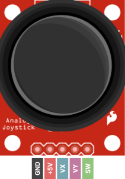

Capstone Project
RC Rover
By Colton Kaneria

Introduction
In this final project, you will create a remote-controlled rover. First, you will design a PCB layout for the remote control and send the CAD files for manufacturing. Then, you will assemble and program the rover. The last step is to solder the components to your custom PCB upon its arrival. The Capstone will require knowledge of everything taught up until this point. From circuit design to soldering, you will have free reign in building this project. It will only need to meet the base requirements; the rest is up to you.
Parts
| Part Name | Qty |
|---|---|
| Breadboard | 1 |
| 9V Battery | 1 |
| JST PH2.0 Female Connector | 1 |
| JST PH2.0 Snap 9V Battery Male Connector | 1 |
| Dupont Jumper Wire (Male-to-Female) | 7 |
| N4F24L01 Transceiver Module | 2 |
| Gearbox Motor | 2 |
| Wheel | 2 |
| Ball Caster | 1 |
| Metal Ball | 1 |
| Long Screw | 2 |
| Hex Nut | 2 |
| Ball Caster Chassis Grip | 1 |
| 4”x4” Wood Plate (Chassis) | 1 |
| 9V Battery Holder | 1 |
| L293D Quadruple Half-H Driver IC | 1 |
| Diode | 1 |
| Mini USB Cable | 1 |
| Analog Joystick | 1 |
| 1x5 Pin Female Header(Bent) | 1 |
| 2x4 Pin Female Header | 1 |
| 1x15 Pin Female Header | 2 |
| Jumper Wire | ? |
| Positive Attitude | 1 |
Schematics
Installing Arduino Libraries
Here is a quick recap on how you can install Arduino libraries in the Arduino IDE 2.0.0+
- Download the library as a .zip
- In the Arduino IDE, go to Sketch → Include Library → Add .ZIP Library…
- Select the .zip of the library and click Open.

You're done! Just make sure to #include the library header
file so that your
code compiles.
Installing KiCad 7.0
To complete this project, you will download the PCB design software KiCad (version 7.0.11).
| Windows | Download |
| Mac | Download |
- Download the installer from the link appropriate to your OS.
-
Launch the installer. Click Next.

-
When the Choose Components dialog appears, make sure all but the “Help files”
components are selected. Then, click Next.

-
Select the Install Location. The default setting is usually acceptable. Then,
click Install.

- The installation is complete! The fun starts now.
Analog Joystick
The remote control will accept input via an analog joystick. The component outputs analog signals that the Arduino board will read and process. Much like a console controller, the joystick has two axes, horizontal and vertical. The degree to which the joystick has pivoted along these axes determines the output of its data lines. 
Joystick Pinout
To the left is the pinout of the joystick. The GND and +5V pins power the radio module.
Make sure they are connected appropriately to the Arduino board.
The next two pins are VX and VY, which carry analog signals for
the horizontal and vertical position of the joystick, respectively. These pins must be connected to analog pins on the Arduino
board.
The last pin is SW. The joystick may act as a button/switch, the digital signal of which
is carried by SW. This pin should be connected to a digital pin on the Arduino.
Wiring the Joystick to the Arduino
The following connections are recommended, so the PCB design procedure is easier to follow. In the end, you can wire the joystick however you like as long as the PCB layout reflects your design choices.
| Joystick Pins | Arduino Nano Pins |
|---|---|
| GND | GND |
| +5V | 5V |
| VX | A0 |
| VY | A1 |
| SW | D2 |
Pull-Up Resistors
Suppose you use a digital input pin on the Arduino board, but it’s not connected to anything. Is the state of the pin HIGH or LOW?
For it to be HIGH, the pin would need to be connected to the VCC power source. For the state to be LOW, the pin would need to be
connected to GND. When the state is indeterminate like this, the pin is said to have a floating signal, which we should avoid.
The solution is what we call a pull-up resistor. The input pin is connected to a high-value resistor R1 whose other terminal
is attached to VCC (as depicted below).
The intent is to set the input pin to the HIGH voltage. We often use a 10kΩ resistor to do so because it drives the current down low
(recall V=IR). Now, the input pin has an effective resistance in the range of 100 MΩ. That’s right: mega-ohms.
The resistance of the pull-up resistor R1 and effective resistance of the input pin divide the voltage VCC such that the voltage at the input pin is equal to VCC (HIGH).
Now, let’s introduce the button: one terminal attached to the input pin and the other GND.
When the button is pressed, the voltage at the input pin is shorted to GND (LOW).
With this circuit, the input pin will either be VCC or GND (HIGH or LOW).
When you use a button or, in our case, the SW pin of the joystick, you should use a pull-up resistor.
Instead of building an external circuit, you can use an internal pull-up resistor in the Arduino board. You may do so by setting
the pin mode as follows:
pinMode(pin, INPUT_PULLUP);
There are also pull-down resistors, which we will not discuss here.
We will use the DHT11 sensor module to measure temperature and humidity. This component is rather straightforward. The DHT11 uses the 1-Wire® protocol to communicate with the Arduino board over a single data line. We simply need to accept the data at the Arduino and display it.
DHT11 Pinout Diagram

To the right is the pinout of the DHT11.
The GND and VCC pins power the radio module. Note that the VCC pin takes a voltage between 3.3 and
5V, but to keep it simple,
connect it to the VCC pin of the Arduino board.
The third and final pin is S. This line carries the communication
between the Arduino and the sensor. It should be connected to a digital pin of the Arduino board.
Using the DHT Library
Writing the code for the DHT11 is almost as easy as wiring it! You can download the DHT library here. You will also need to download the Adafruit USD Library here. Make sure to include the header files:
#include <DHT.h>
#include <Adafruit_Sensor.h>
At the core of this library is the DHT class, which you will instantiate as an object and use to read data from the sensor.
Create an object as follows, declaring it in the global scope.
DHT weatherSensor(int pin, DHT11);
Then, in the setup() function definition, initiate DHT communication with the following:
weatherSensor.begin();
To collect data from the sensor, call the readHumidity()
and readTemperature() functions
from the DHT object. These functions return a float type which can be stored in a variable.
LCD with I2C Backpack
The Liquid Crystal Display or LCD is a classic piece of technology for displaying characters from a microcontroller board.
Our particular display has the dimensions 16x2, meaning it has 16 columns and 2 rows.
Traditionally, characters are transmitted from the board to the LCD in a parallel protocol, along with bits for other
features like backlighting and positioning. Instead, we’ll use an I2C backpack, which translates an I2C signal to parallel.
This reduces the mess of wiring over 10 pins to the Arduino to just four.
I2C Backpack Pinout Diagram
Below is a pinout of the I2C backpack attached to the LCD. Focus on the four pins labeled on the backpack. You should recognize two pins as the SDA and SCL lines for I2C protocol.

It should also come as no surprise that the GND and VCC pins power the backpack and the LCD. Note that the VCC pin accepts 5V, so connect it to the 5V pin of the Arduino board.
Wiring the Arudino to the I2C Backpack
The Arduino is designed to handle I2C communication through certain pins on the board, which connect to the backpack as follows.
| I2C Backpack Pins | Arduino Nano Pins |
|---|---|
| GND | GND |
| VCC | 5V |
| SDA | A4 |
| SCL | A5 |
Having trouble seeing the text on your LCD? There is a potentiometer on the backpack that you can turn to adjust the contrast of the LCD. You will need a Phillips screwdriver to do so.
Using the LiquidCrystal I2C Library
Download the library here. Make sure to include the header file:
#include <LiquidCrystal_I2C.h>
To display text, you will instantiate an object of the LiquidCrystal_I2C class, declaring it in the
global scope. Note in the constructor the address
argument , which should be 0x27,
the default I2C address of the backpack. The remaining arguments should match the dimensions of the
LCD.
LiquidCrystal_I2C lcd(int address, int columns, int rows);
You will call lcd’s init() and backlight() functions just once to initialize the
display.
Place this code in your setup() function.
lcd.init();
lcd.backlight();
Now, you can print to the LCD as though you are in a text editor. You’ll have to move a “cursor”
with the lcd’s cursor() function.
Remember that the columns and rows are indexed starting from zero.
lcd.cursor(int column, int row);
Print characters using one of lcd’s following overloaded print() function. Remember that a string can be
represented by a string literal like “Hello World”.
Make sure to move the cursor as needed.
lcd.print(char[] string);
lcd.print(int num);
lcd.print(float num);
You can clear the LCD with the following function.
lcd.clear();
Let’s see all of the code in action!
Do not blindly copy-paste the sample code to your project deliverables. Read it, understand it, then adapt it to your own code.
#include <LiquidCrystal_I2C.h>
LiquidCrystal_I2C lcd(0x27, 16, 2);
void setup()
{
lcd.init(); // initialize the lcd
lcd.backlight();
}
void loop()
{
lcd.clear(); // clear display
lcd.setCursor(0, 0); // move cursor to (0, 0)
lcd.print("Hello"); // print message at (0, 0)
lcd.setCursor(2, 1); // move cursor to (2, 1)
lcd.print("World"); // print message at (2, 1)
delay(1000); // delay between each print to LCD
}NRF24L01 Transceiver Module
The NRF24 radio transceiver is a popular choice for wireless communication between microcontroller boards. We’ll use the NRF24L01 variation, which is a low-power, high-frequency radio module.
Here’s how we’ll transmit data: The Arduino board will transfer messages to and from the radio module using SPI protocol, and the radio module will handle the rest. It uses a radio protocol called Enhanced ShockBurst™ (ESB) to transmit wirelessly to another NRF24. The beauty of it all is that we don’t need to know how ESB protocol works; we just need to get the data from the Arduino to the radio module.
Radio Frequency Bands and Channels
Remember that the NRF24 modules send information over radio waves, just like our mobile phones, satellites, and WiFi. But how do the radio waves emitted by a satellite not interfere with the radio waves of a WiFi router or iPhone? Let’s explain: Each signal belongs to a frequency band or range of contiguous frequencies specified by the International Telecommunication Union (ITU).

FM radio is designated to a frequency band of 88-108 MHz, and WiFi exists in 2.4 GHz and 5 GHz bands. These bands are further divided into channels.
For example, FM radio has 100 channels, each with a different radio frequency within the larger frequency band. FM radio stations are assigned to unique channels, which is why you normally don’t hear Taylor Swift overlaid with the latest stock market report.
If multiple radio signals were to exist on the same frequency, a collision would occur. This is why the ITU takes special care to regulate the radio spectrum.
The NRF24L01 operates on a 2.4 GHz frequency band, which it shares with WiFi. This band is subdivided into 125 channels from which we choose to emit a signal. You will have to manually select a channel for the two radio modules to operate on. Moreover, this channel will have to be different from any nearby pair of NRF24 modules to avoid collisions.
NRF24L01 Pinout
Below, you’ll find a pinout of the NRF24L01. You should recognize some of the pins as the SPI protocol lines (i.e., CE/CS, PICO, POCI, SCK).

The GND and VCC pins power the radio module. Make sure that VCC is connected to a 3.3V power source rather than 5V. Unlike other components we use, the NRF24 accepts only 3.3V power, which is an increasingly common voltage in modern digital circuits. Luckily, the module still tolerates 5V logic, meaning we can connect the other pins to the Arduino’s digital pins as we normally would.
The CSN pin is the “Chip Select Not” pin, which disables SPI communication when HIGH. When we want the radio module to listen for SPI messages, the pin is set to LOW.
Last but not least is the IRQ pin for interrupts, which we will not use in this project. Make sure the IRQ pin is left disconnected.
Wiring the Arduino to the Radio Module
Just like I2C, the Arduino is designed to handle SPI communication through certain pins on the board, which connect to the NRF24 as follows.
| NRF24L01 Pins | Arduino Nano Pins |
|---|---|
| GND | GND |
| VCC | 3.3V |
| CE/CS | D7 |
| CSN | D8 |
| SCK | D13 |
| PICO | D11 |
| POCI | D12 |
| IRQ | None |
Using the NRF24L01_W Library
Once you wire the Arduino board to the radio module, it’s time to write code! Download the
library
here .
Make sure to include the header file:
#include <NRF24L01_W.h>
You will instantiate a global object of the NRF24L01_W class, which represents the radio connected to the Arduino board. The two arguments of the constructor are the CS and CSN pins of the board.
NRF24L01_W radio(int CS, int CSN);
The next steps are to configure your newly created radio object. Place this code in your setup() function.
radio.begin();
You will set the address of your radio to a five
character string and pass it into the radio's setReceiveAddress() function.
For example, you could set the address to "B1440”.
Make sure the address is unique.
radio.setReceiveAddress(char[] address);
Now, enter the address of the radio to which you intend to transmit messages.
radio.setTransmitAddress(char[] address);
You will also set the channel that your radios will operate on. Pick one at random in the range of 0-124. Make sure that both NRF24 modules are set to the same channel.
radio.setChannel(int channel);
Let’s move on to the code that would appear in the main() loop. This is where radio messages will be
read and written (transmitted and received).
To facilitate the data transfer, you are provided with a special container WeatherReport with three member variables that are
initialized as follows.
Note that these variables are int type.
WeatherReport report;
report.temperature = 77;
report.humidity = 89;
report.light = 1;
To send a report to the other radio, use the write() function, passing the
WeatherReport container as an argument.
radio.write(WeatherReport report);
You may check to see if the radio has incoming data with the following function, which returns
an int greater than zero
if there is data available.
int payload = radio.available();
To read incoming data, use the radio’s read()
function, which returns a WeatherReport
WeatherReport incomingReport = radio.read();
Here’s an example of all the code put together.
Do not blindly copy-paste the sample code to your project deliverables. Read it, understand it, then adapt it to your own code.
#include <NRF24L01_W.h>
NRF24L01_W radio(7, 8);
void setup()
{
Serial.begin(9600); // Serial setup
radio.begin(); // Initialize the radio
radio.setReceiveAddress("00001"); // Set this radio's address
radio.setTransmitAddress("00002"); // Address of the recipient
radio.setChannel(23); // Set the channel
}
void loop()
{
WeatherReport report; // Initialize weather report
report.temperature = 34;
report.humidity = 70;
report.light = 0;
radio.write(report);
if (radio.available())
{
WeatherReport incomingReport = radio.read(); // Read incoming
Serial.print("Temperature: "); // Print temperature
Serial.println(incomingReport.temperature);
}
delay(1000);
} Requirements
Transmitter Station
- You must build a transmitter that will read data from sensors and send it to the receiving station.
- The transmitter must read and interpret data from a light sensor and DHT11 sensor every 10 seconds.
-
The sensor data must include the following:
- Temperature
- Humidity
- Whether it is day or night
- The sensor data must be accurate.
- After the transmitter reads the sensor data, it must immediately send it using the NRF24L01 transceiver.
- The circuit must be built on a breadboard.
Receiver Station
- You must build a receiver that will collect data sent from the transmitter and display it onto an LCD.
- The receiver must update the LCD with the most recently received data over the NRF24L01 transceiver.
- The data received must be identical to the data sent over the NRF24L01 transceiver.
-
The data must include the following:
- Temperature
- Humidity
- Whether it is day or night
- The circuit must be built on a breadboard.
Instructions
Checkpoint 1
You will test the DHT11 and light sensor, outputting their data to the serial monitor.
- Build the circuit in Schematic A on one breadboard.
-
Program the Arduino board to print the following information to the serial monitor
every 10
seconds:
- Temperature
- Humidity
- Whether it is day or night
-
Upload your sketch to the board, and verify that the system executes as expected.
You should see an output similar to the following on the serial monitor:
Temp: 34C Humidity: 80% Time: Day Temp: 35C Humidity: 81% Time: Day Temp: 36C Humidity: 79% Time: NightDon’t expect the same exact values; any value within reason is acceptable. The formatting doesn’t have to be exactly the same either.
Checkpoint 2
You will now test the I2C Backpack and LCD and print fake weather data to the display.
-
Build the circuit in Schematic B on another breadboard.
Do not disassemble the circuit from Checkpoint 1.Connect the LCD to the breadboard using the dupont jumper.
-
Program the Arduino board to print the following information to the serial monitor
every 10
seconds:
- Temperature
- Humidity
- Whether it is day or night
-
Upload your sketch to the board, and verify that the system executes as expected.
You should see an output similar to the following on the LCD:
 Remember that these are fake values, so they don’t need to be the same on your LCD. The formatting does not have to look identical.
Remember that these are fake values, so they don’t need to be the same on your LCD. The formatting does not have to look identical.
Checkpoint 3
As the final checkpoint, you will assemble the weather station network, building both the transmitter and receiver stations.
-
You will design the weather station or transmitter, which will send weather reports to the
receiver board with the LCD.
Build the circuit in Schematic C, which extends Schematic A (Checkpoint 1).
Do not disassemble anything. Just add to the existing breadboard.
- Connect the NRF24 radios to the breadboard using the dupont jumper wire.
- This circuit will be powered by the 9V battery. No USB power is required.
-
Program the transmitter Arduino board to send a
WeatherReportcontainer over radio every 10 seconds. -
You will design the receiver board, which will display the weather report on the LCD. Build
the circuit in Schematic D,
which extends Schematic B (Checkpoint 2).
Do not disassemble anything. Just add to the existing breadboard.
-
Program the receiver Arduino board to display a
WeatherReporton the LCD upon receiving one.You may set a delay since you only expect a report to be sent every 10 seconds. -
Upload your transmitter and receiver sketches to the respective board, and verify that the
system
executes as expected.
Every 10 seconds, the transmitting weather station will send a new weather report to the receiver.The receiver will display any newly received weather reports on its LCD, which should look like the following (but not necessarily identical):
Deliverables
Students enrolled in the course must submit the following deliverables to the corresponding
Canvas
course assignment:
Place the following files in a single folder:
-
Photo of the weather station/transmitter Arduino board
This photo should include the DHT11, light sensor, NRF24 transceiver, and one Arduino correctly wired together.
-
Photo of the receiver Arduino board
This photo should include the NRF24 transceiver, LCD, and one Arduino correctly wired together.The LCD should clearly display the temperature, humidity, and time of day (day or night).
-
Transmitter Arduino sketch file
This file should include all of the code you have written for the Arduino Nano acting as the transmitter. Name it “
ops_project6_transmitter.ino”. -
Receiver Arduino sketch file
This file should include all of the code you have written for the Arduino Nano acting as the receiver. Name it “
ops_project6_receiver.ino”.
Compress the folder to a zip file and rename the file using the format “ops_project6_lastname_firstname.zip” Then, submit the zip file to the Project 6 Canvas assignment.